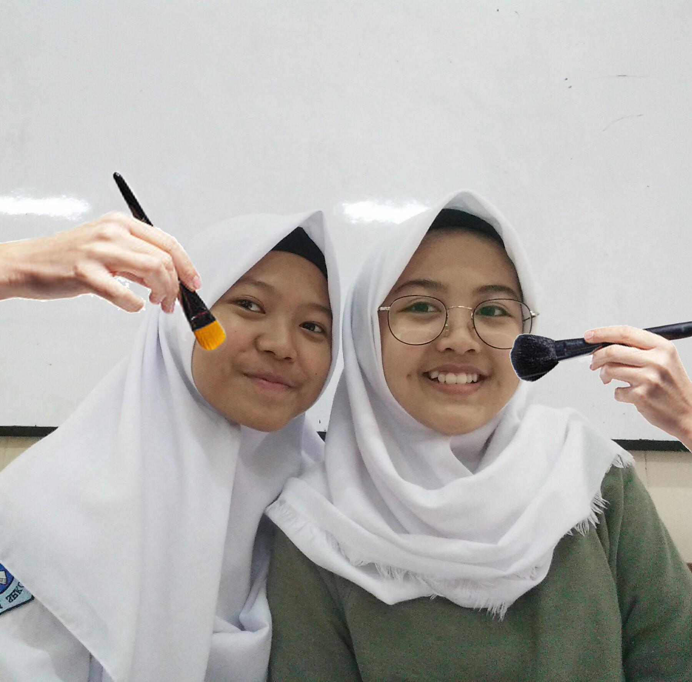
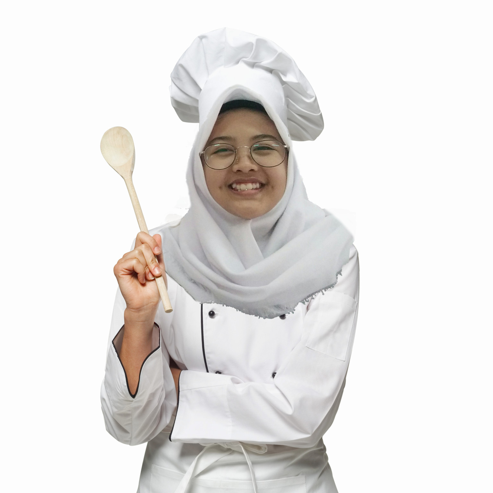

ABOUT FAZIRA
Halo! namaku Fazira, Fazira Hally Widiana untuk lebih tepatnya, aku lahir di Bogor pada tanggal 14 Agustus 2001. Aku anak pertama dari 3 bersaudara.
Aku pernah bersekolah di SDN Baranang Siang Bogor, SMP Negeri 3 Bogor, dan sekarang aku bersekolah di SMK-SMAK Bogor.
Hobiku itu mendengarkan musik, fangirling, masak, juga aku punya ketertarikan yang besar terhadap makeup
Aku amat sangat menyukai musik. Entah genre apapun itu aku tetap suka. Namun yang paling aku sukai adalah pop rock dan juga K-popAku ini orangnya agak labil kalo tentang idola. Apalagi buat nentuin idola yang bener-bener idola buat aku. ugh labil banget! Kadang aku suka sama si a eh tiba- tiba besoknya aku suka sama si z labil banget kan! ><
Rasanya aku gabisa hidup tanpa 4 poin ini. Mau liat keseruan hobiku? yuk scroll terus!
PICTURES OF FAZIRA
Ini adalah foto-foto tentang diriku, hope you like it, guys!

Ini adalah aku dan temanku, Sayu
